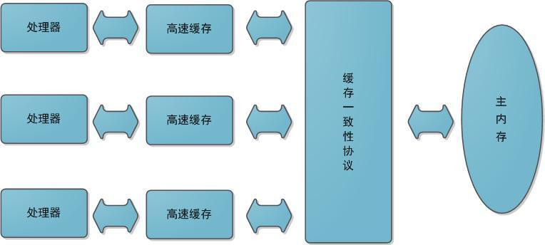

Java内存模型与线程
概述
多任务和高并发是衡量一台计算机处理器的能力重要指标之一。一般衡量一个服务器性能的高低好坏，使用每秒事务处理数（Transactions Per Second，TPS）这个指标比较能说明问题，它代表着一秒内服务器平均能响应的请求数，而TPS值与程序的并发能力有着非常密切的关系。在讨论Java内存模型和线程之前，先简单介绍一下硬件的效率与一致性。
硬件的效率与一致性
需要多任务处理的一个重要原因是计算机的运算速度与它的存储和通信子系统速度的差距太大。所以现代计算机系统都不得不加入一层读写速度尽可能接近处理器运算速度的高速缓存（Cache）来作为内存与处理器之间的缓冲：将运算需要使用到的数据复制到缓存中，让运算能快速进行，当运算结束后再从缓存同步回内存之中没这样处理器就无需等待缓慢的内存读写了。
基于高速缓存的存储交互很好地解决了处理器与内存的速度矛盾，但是引入了一个新的问题：缓存一致性（Cache Coherence）。在多处理器系统中，每个处理器都有自己的高速缓存，而他们又共享同一主存，如下图所示：多个处理器运算任务都涉及同一块主存，需要一种协议可以保障数据的一致性，这类协议有MSI、MESI、MOSI及Dragon Protocol等。Java虚拟机内存模型中定义的内存访问操作与硬件的缓存访问操作是具有可比性的，后续将介绍Java内存模型。

除此之外，为了使得处理器内部的运算单元能被充分利用，处理器可能会对输入代码进行乱序执行（Out-Of-Order Execution）优化，处理器会在计算之后将对乱序执行的代码进行结果重组，保证结果准确性。与处理器的乱序执行优化类似，Java虚拟机的即时编译器中也有类似的指令重排序（Instruction Recorder）优化。
Java内存模型
Java虚拟机规范中试图定义一种Java内存模型来屏蔽掉各种硬件和操作系统的内存访问差异，以实现让Java程序在各种平台下都能达到一致的内存访问效果。
定义Java内存模型并不是一件容易的事情，这个模型必须定义得足够严谨，才能让Java的并发操作不会产生歧义；但是，也必须得足够宽松，使得虚拟机的实现能有足够的自由空间去利用硬件的各种特性（寄存器、高速缓存等）来获取更好的执行速度。经过长时间的验证和修补，在JDK1.5发布后，Java内存模型就已经成熟和完善起来了。
- Java内存模型的主要目标：定义程序中各个变量的访问规则，即在虚拟机中将变量存储到内存和从内存中取出变量这样底层细节。
Java内存模型规定：
① 所有变量都存储在主内存
② 每条线程还有自己的工作内存（可以与前面将的处理器的高速缓存类比），保存了该线程使用到的变量到主内存副本拷贝
③线程对变量的所有操作（读取、赋值）都必须在工作内存中进行，而不能直接读写主内存中的变量。不同线程之间无法直接访问对方工作内存中的变量，线程间变量值的传递均需通过主内存来完成

关于主内存与工作内存之间的具体交互协议，即一个变量如何从主内存拷贝到工作内存、如何从工作内存同步到主内存之间的实现细节，Java内存模型定义了以下八种操作来完成：
- lock（锁定）：作用于主内存的变量，把一个变量标识为一条线程独占状态。
- unlock（解锁）：作用于主内存变量，把一个处于锁定状态的变量释放出来，释放后的变量才可以被其他线程锁定。
- read（读取）：作用于主内存变量，把一个变量值从主内存传输到线程的工作内存中，以便随后的load动作使用
- load（载入）：作用于工作内存的变量，它把read操作从主内存中得到的变量值放入工作内存的变量副本中。
- use（使用）：作用于工作内存的变量，把工作内存中的一个变量值传递给执行引擎，每当虚拟机遇到一个需要使用变量的值的字节码指令时将会执行这个操作。
- assign（赋值）：作用于工作内存的变量，它把一个从执行引擎接收到的值赋值给工作内存的变量，每当虚拟机遇到一个给变量赋值的字节码指令时执行这个操作。
- store（存储）：作用于工作内存的变量，把工作内存中的一个变量的值传送到主内存中，以便随后的write的操作。
- write（写入）：作用于主内存的变量，它把store操作从工作内存中一个变量的值传送到主内存的变量中。
如果要把一个变量从主内存中复制到工作内存，就需要按顺寻地执行read和load操作，如果把变量从工作内存中同步回主内存中，就要按顺序地执行store和write操作。Java内存模型只要求上述操作必须按顺序执行，而没有保证必须是连续执行。也就是read和load之间，store和write之间是可以插入其他指令的，如对主内存中的变量a、b进行访问时，可能的顺序是read a，read b，load b， load a。Java内存模型还规定了在执行上述八种基本操作时，必须满足如下规则：
- 不允许read和load、store和write操作之一单独出现
- 不允许一个线程丢弃它的最近assign的操作，即变量在工作内存中改变了之后必须同步到主内存中。
- 不允许一个线程无原因地（没有发生过任何assign操作）把数据从工作内存同步回主内存中。
- 一个新的变量只能在主内存中诞生，不允许在工作内存中直接使用一个未被初始化（load或assign）的变量。即就是对一个变量实施use和store操作之前，必须先执行过了assign和load操作。
- 一个变量在同一时刻只允许一条线程对其进行lock操作，lock和unlock必须成对出现
- 如果对一个变量执行lock操作，将会清空工作内存中此变量的值，在执行引擎使用这个变量前需要重新执行load或assign操作初始化变量的值
- 如果一个变量事先没有被lock操作锁定，则不允许对它执行unlock操作；也不允许去unlock一个被其他线程锁定的变量。
- 对一个变量执行unlock操作之前，必须先把此变量同步到主内存中（执行store和write操作）。
对volatile型变量的特殊规则
volatile可以说是Java虚拟机提供的最轻量级的同步机制。
当一个变量定义为volatile后，它将具备两种特性：
①保证此变量对所有线程的可见性（synchronized和final关键字也能保证可见性）
“可见性”指的是当一条线程修改了这个变量的值，新值对于其他线程来说是可以立即得知的。而普通变量不能做到这一点，普通变量的值在线程传递均需要通过主内存完成。
“可见性”并不能保证基于volatile的变量的运算在并发下是安全的。因为Java里的运算并非原子操作。
由于volatile只能保证可见性，在不符合以下两条规则的运算场景中，我们仍然要通过加锁（使用synchronized或java.util.concurrent中的原子类）来保证原子性。
运算结果不依赖变量的当前值，或者确保只有单一的线程修改变量的值（其他线程只读）
变量不需要与其他的状态变量共同参与不变约束
2
3
4
5
6
7
8
9
10
11
12
13
> volatile boolean shutsownRequested;
>
> public void shutdown(){
> shutdownRequested = true;
> }
>
> public void doWork(){
> while(!shutdownRequested){
> /* do stuff */
> }
> }
>
② 禁止指令重排序优化
1 | Map configOptions; |
如果定义initialized变量时没有使用volatile修饰，就可能因为指令重排序优化，导致线程A中“initialized = true”被提前执行，这样在线程B中使用配置信息就可能出错，而volatile关键字可用避免此类情况发生。
在执行程序时为了提高性能，编译器和处理器经常会对指令进行重排序。重排序分成三种类型：
① 编译器优化的重排序。编译器在不改变单线程程序语义放入前提下，可以重新安排语句的执行顺序。
② 指令级并行的重排序。现代处理器采用了指令级并行技术来将多条指令重叠执行。如果不存在数据依赖性，处理器可以改变语句对应机器指令的执行顺序。
③ 内存系统的重排序。由于处理器使用缓存和读写缓冲区，这使得加载和存储操作看上去可能是在乱序执行。
3个特性
Java内存模型是围绕着在并发过程中如何处理原子性、可见性和有序性这3个特征来建立的。
① 原子性
大致可以认为基本数据类型的访问是具备原子性的（long和double这两个64位长度的存在非原子协定，但几乎不会发生）。除此之外，在synchronized块之间的操作也具备原子性。
② 可见性
指的是当一条线程修改了共享变量的值，其他线程能够立即得知这个修改。Java内存模型是通过在变量修改后将新值同步回主内存，在变量读取前从主内存刷新变量值这种依赖主内存作为传递媒介的方式来实现可见性的。（volatile保证了新值立即同步到主内存，以及每次使用前立即从主内存刷新）。synchronized和final关键字也能保证可见性
③ 有序性
“如果在本线程内观察，所有操作都是有序的；如果在一个线程中观察另一个线程，所有操作都是无序的。”
前半句是指“线程内表现为串行的语义(Within-Thread As-If-Serial Semantics)，后半句是指”指令重排序“和”工作内存和主内存同步延迟“现象。volatile和synchronized关键字都能保证有序性。
- 可以看到synchronized关键字在3种特性下，都可以作为解决方案，大部分并发控制操作都能使用synchronized关键字完成。但在大多数场景下，volatile的总开销都比锁要低。所以当volatile能解决的场景下，应选择volatile。